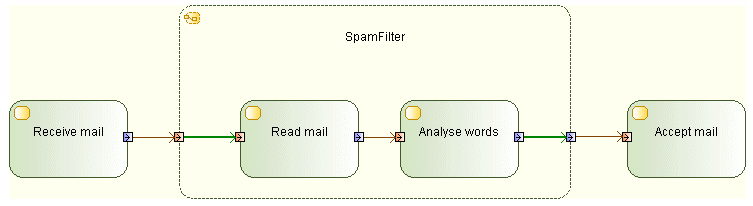

Input pins may have outgoing edges only when they are on actions that are structured nodes, and these edges must target a node contained by the structured node.
UML constraint: Input pins may have outgoing edges only when they are on actions that are structured nodes, and these edges must target a node contained by the structured node.
Example:

When you get a R1360 error, verify that what you want to achieve is a configuration as in the example above. If this is the case, make sure the incriminated InputPin only has outgoing object flows towards Nodes which are inside the StructuredNode.